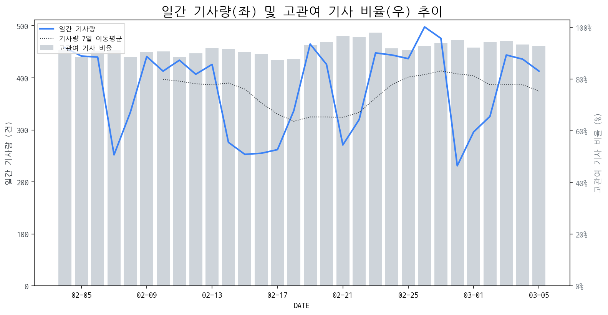

1
시장 활동 지표
기사량 추세 & 이상 징후 탐지
시장의 '전체 기사량'이 평소보다 비정상적으로 급증했는지(Spike)를 차트로 확인하고, LLM이 분석한 급등의 핵심 원인을 파악할 수 있음

고관여 기사란? 산업 연관 키워드로 수집된 기사들 중 디스플레이 키워드에 가중치를 반영하여 도출된 관련성 높은 기사
수집된 기사 수 (2026-03-05)
413
-17% WoW
기사량 변동 수준 (7일 이동평균 대비)
±6.7% 이하
2
오늘의 키워드
급격한 관심 ↑, 주목해야 할 키워드
1
qled
+8.4σ
삼성전자, 독일 법원에서 중국 TCL의 QLED 허위 광고 판결 승소로 QLED 기술 논쟁 부각
Related Metrics
금일 언급량: 30, 전일 대비: +30
Interpretation
QLED 기술 표준화 중요성 부각
Next Step
핵심 토픽 'Quantum_Dot_Topic' 관련 신호입니다. 3번 섹션(키워드 감성분석)에서 해당 토픽의 감성 변동을 교차 확인하세요.
2
tcl
+8.2σ
TCL, 독일 법원에서 QLED 허위 광고 판결로 삼성과 분쟁 중이며 국내 시장 공략 가속화
Related Metrics
금일 언급량: 32, 전일 대비: +31
Interpretation
경쟁사 분쟁, 시장 진입 강화
Next Step
'tcl' 관련 상세 기사 및 경쟁사 반응 모니터링
3
tv
+3.4σ
올림픽 특수 기대 속 경쟁 심화 및 신기술 통한 돌파구 모색 관련 기사들로 'TV' 키워드 급증.
Related Metrics
금일 언급량: 21, 전일 대비: +10
Interpretation
시장 경쟁 심화, 신기술 주목.
Next Step
'tv' 관련 상세 기사 및 경쟁사 반응 모니터링
4
엔비디아
+1.8σ
엔비디아, 중국 수출 규제 및 신제품 루머로 인한 급등.
Related Metrics
금일 언급량: 8, 전일 대비: +4
Interpretation
AI 칩 수요 견조, 디스플레이 영향 제한적.
Next Step
'엔비디아' 관련 상세 기사 및 경쟁사 반응 모니터링
3
실시간 Risk 키워드
경계해야 할 시그널 탐지
특정 토픽의 부정 감성 점수가 급등할 때 이를 즉시 탐지하고, "근거 기사" 링크를 통해 리스크의 실체를 빠르게 파악할 수 있음
키워드 분석 결과, 오늘은 걱정할 만한 하락 신호가 없습니다. (부정 언급량 변화: +1.5σ 이내)
4
주요 이벤트 모니터링
실시간 산업 동향 파악을 위한 주요 활동
최근 발생한 주요 기업들의 신제품 출시, 투자 등 주요 이벤트를 제공하여 매일 경쟁사 동향을 확인할 수 있음
코세스가 반도체, 2차전지, LED 산업을 중심으로 글로벌 장비 시장 공략을 강화하기 위해 투자를 확대하고 있습니다. 이는 기존 디스플레이 장비 사업 외에 신성장 동력 확보를 위한 전략입니다.
Impact
코세스의 사업 다각화는 디스플레이 장비 시장 내 경쟁 환경에 변화를 가져올 수 있으며, 관련 기술 및 장비 공급망에 영향을 미칠 가능성이 있습니다.
Next Step
디스플레이 제조 기업은 코세스의 신규 사업 분야에서의 경쟁력 및 잠재적 파트너십 가능성을 면밀히 검토해야 합니다.
미래에셋생명이 대규모 자사주 소각을 발표하며 주가가 상한가를 기록했습니다. 이는 주주 가치 제고를 위한 적극적인 행보로 해석됩니다.
Impact
이와 같은 자사주 소각 및 주주 환원 정책 강화는 투자 심리를 개선시키고, 유사한 기업들의 주주 가치 제고 움직임을 촉발하여 전반적인 시장의 투자 매력을 높일 수 있습니다.
Next Step
디스플레이 제조 기업은 경쟁사의 주주 환원 정책 변화 추이를 관찰하며, 자사 기업 가치 제고를 위한 장기적인 관점의 주주 친화 정책 수립을 검토해야 합니다.
한솔케미칼의 조연주 부회장에 대한 관심이 집중되고 있습니다. 이는 한솔케미칼이 디스플레이 소재 분야에서 중요한 역할을 하고 있음을 시사합니다.
Impact
이 인물에 대한 주목은 한솔케미칼의 디스플레이 소재 사업 방향 및 투자 계획에 대한 잠재적인 변화를 예고하며, 관련 시장 경쟁 구도에 영향을 줄 수 있습니다.
Next Step
디스플레이 제조 기업은 한솔케미칼의 향후 전략 변화 가능성을 주시하며, 조연주 부회장의 행보를 통해 신소재 개발 및 공급망 협력 기회를 탐색해야 합니다.
중국의 비전옥스가 장비 입찰을 개시하며 삼성디스플레이의 시장 지배력에 도전장을 내밀었습니다. 이는 중국 디스플레이 기업들의 연합을 통해 이뤄지고 있습니다.
Impact
이번 입찰은 OLED 장비 시장의 경쟁 심화를 야기하고, 장비 공급망의 다변화 및 가격 경쟁력 강화로 이어질 수 있습니다.
Next Step
삼성디스플레이는 경쟁사의 기술 발전 동향을 면밀히 파악하고, 자체 기술 경쟁력 강화 및 차세대 기술 선점을 위한 투자를 확대해야 합니다.
피지컬 AI 및 휴머노이드 로봇 관련주들이 급등하며 시장의 주목을 받고 있습니다. 특히 아이엘, 한라캐스트, 나인 등이 높은 상승률을 기록했습니다.
Impact
이러한 피지컬 AI 및 휴머노이드 로봇 시장의 성장은 디스플레이 패널의 새로운 응용 분야를 창출하고, 로봇의 시각 정보 처리를 위한 고품질 디스플레이 수요를 증가시킬 수 있습니다.
Next Step
디스플레이 제조 기업은 로봇의 센서 및 인터페이스에 최적화된 고해상도, 고신뢰성 디스플레이 기술 개발 및 파트너십 구축을 고려해야 합니다.